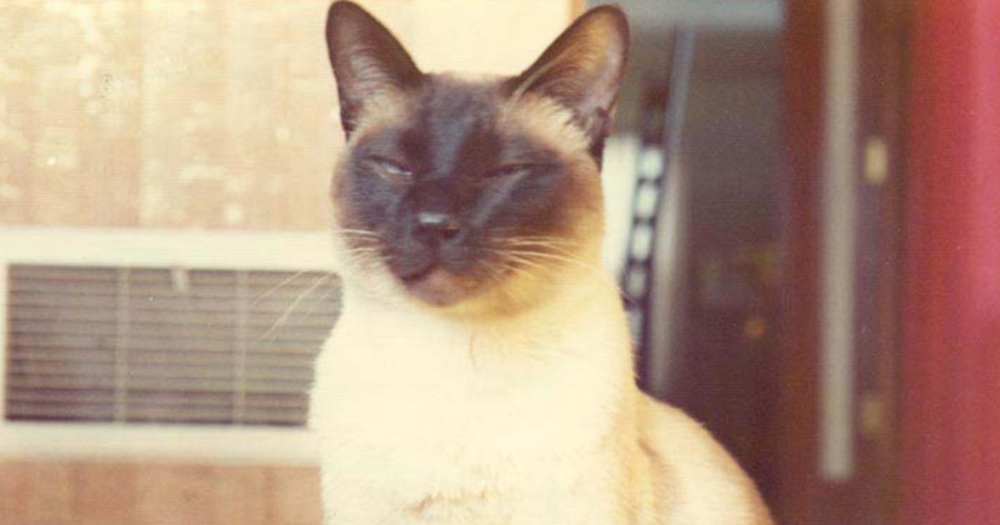

Когда кошка стала соавтором статьи в ведущем физическом журнале (1975)
Еще в 1975 году Джек Х.
Хетерингтон, профессор физики в Мичиганском государственном университете, написал исследовательскую работу по физике низких температур для уважаемого научного журнала Physical Review Letters.
Прежде чем отправить его, Хетерингтон попросил коллегу просмотреть документ, чтобы убедиться, что он охватывает правильные основы.
Что произошло дальше, Хетерингтон объяснил в книге 1982 года «Больше случайных прогулок ...